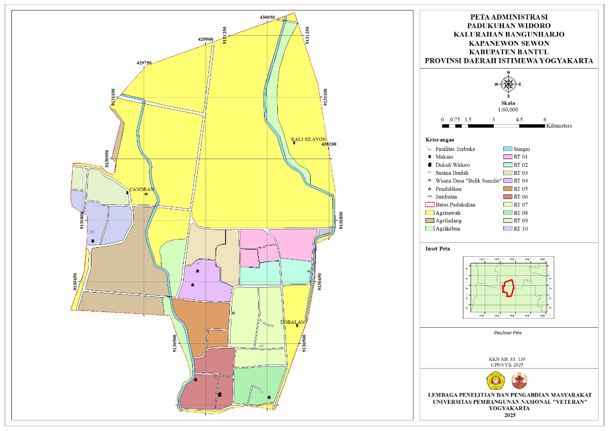

Profil Padukuhan Widoro
Padukuhan Widoro terletak di Kalurahan Bangunharjo, Kapanewon Sewon, Kabupaten Bantul. Terkenal dengan lingkungan yang asri, masyarakat yang ramah dan semangat gotong royong yang tinggi. Padukuhan ini terdiri dari 10 RT dengan luas wilayah sekitar 48 hektar dan memiliki potensi budaya serta kegiatan sosial yang kuat.
10
Jumlah RT
± 48 Ha
Luas Wilayah
UMKM Padukuhan Widoro
Peta Padukuhan
Batas wilayah dusun :
Selatan : Padukuhan Cangkringmalang Kalurahan Timbulharjo
Timur : Padukuhan Dobalan Kalurahan Timbulharjo, Padukuhan Gatak Kalurahan Bangunharjo
Utara : Padukuhan Gatak Kalurahan Bangunharjo, Padukuhan Mredo Kalurahan Bangunharjo
Barat : Padukuhan Garon Kalurahan Panggungharjo
Kegiatan Padukuhan Widoro
Posyandu
Kegiatan posyandu ini dilaksanakan setiap satu bulan sekali di tanggal 5. Diikuti balita, dewasa, dan usia lanjut.
Lihat DetailBank Sampah
Masyarakat dapat menyetorkan sampah yang sudah dipilah, seperti plastik ke bank sampah untuk ditukar dengan uang.
Lihat DetailArisan PKK
Arisan PKK merupakan kegiatan rutin ibu - ibu PKK yang dilaksanakan setiap satu bulan sekali.
Lihat DetailTPQ Madin
TPQ Madin merupakan lembaga pendidikan non-formal yang fokus pada pengajaran ilmu agama Islam.
Lihat Detail